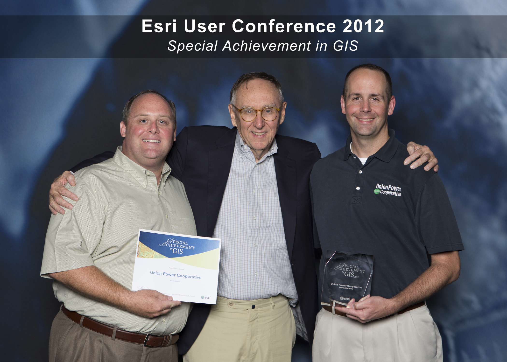

Awards & Certifications
-
GISP-GIS Professional Certificate by GISCI
-
Esri SAG Award - Special Achievement in GIS (2012)
-
Award of Excellence for Best Application of Electronic Communication by NRECA (2012)
-
Esri’s Development Center Students of the Year (2019)
